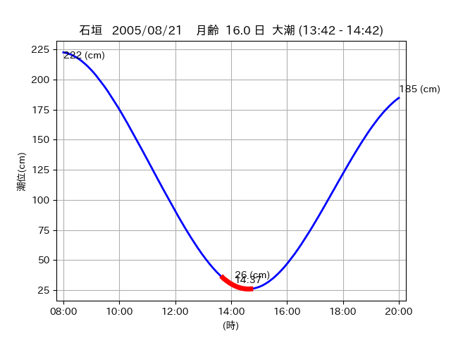

<!DOCTYPE html>
<html>
<head>
    
    <meta http-equiv="content-type" content="text/html; charset=UTF-8" />
    
        <script>
            L_NO_TOUCH = false;
            L_DISABLE_3D = false;
        </script>
    
    <style>html, body {width: 100%;height: 100%;margin: 0;padding: 0;}</style>
    <style>#map {position:absolute;top:0;bottom:0;right:0;left:0;}</style>
    <script src="https://cdn.jsdelivr.net/npm/leaflet@1.9.3/dist/leaflet.js"></script>
    <script src="https://code.jquery.com/jquery-3.7.1.min.js"></script>
    <script src="https://cdn.jsdelivr.net/npm/bootstrap@5.2.2/dist/js/bootstrap.bundle.min.js"></script>
    <script src="https://cdnjs.cloudflare.com/ajax/libs/Leaflet.awesome-markers/2.0.2/leaflet.awesome-markers.js"></script>
    <link rel="stylesheet" href="https://cdn.jsdelivr.net/npm/leaflet@1.9.3/dist/leaflet.css"/>
    <link rel="stylesheet" href="https://cdn.jsdelivr.net/npm/bootstrap@5.2.2/dist/css/bootstrap.min.css"/>
    <link rel="stylesheet" href="https://netdna.bootstrapcdn.com/bootstrap/3.0.0/css/bootstrap-glyphicons.css"/>
    <link rel="stylesheet" href="https://cdn.jsdelivr.net/npm/@fortawesome/fontawesome-free@6.2.0/css/all.min.css"/>
    <link rel="stylesheet" href="https://cdnjs.cloudflare.com/ajax/libs/Leaflet.awesome-markers/2.0.2/leaflet.awesome-markers.css"/>
    <link rel="stylesheet" href="https://cdn.jsdelivr.net/gh/python-visualization/folium/folium/templates/leaflet.awesome.rotate.min.css"/>
    
            <meta name="viewport" content="width=device-width,
                initial-scale=1.0, maximum-scale=1.0, user-scalable=no" />
            <style>
                #map_5eb1f92ce0c398721cdcf33ed86eb2cd {
                    position: relative;
                    width: 2048.0px;
                    height: 1600.0px;
                    left: 0.0%;
                    top: 0.0%;
                }
                .leaflet-container { font-size: 1rem; }
            </style>
        
</head>
<body>
    
    
            <div class="folium-map" id="map_5eb1f92ce0c398721cdcf33ed86eb2cd" ></div>
        
</body>
<script>
    
    
            var map_5eb1f92ce0c398721cdcf33ed86eb2cd = L.map(
                "map_5eb1f92ce0c398721cdcf33ed86eb2cd",
                {
                    center: [24.075, 123.79],
                    crs: L.CRS.EPSG3857,
                    ...{
  "zoom": 12,
  "zoomControl": true,
  "preferCanvas": false,
}

                }
            );

            

        
    
            var tile_layer_bf2f03fb72001af64fbe86ca2a803bc8 = L.tileLayer(
                "https://cyberjapandata.gsi.go.jp/xyz/seamlessphoto/{z}/{x}/{y}.jpg",
                {
  "minZoom": 0,
  "maxZoom": 18,
  "maxNativeZoom": 18,
  "noWrap": false,
  "attribution": "\u5730\u7406\u9662\u5730\u56f3",
  "subdomains": "abc",
  "detectRetina": false,
  "tms": false,
  "opacity": 1,
}

            );
        
    
            tile_layer_bf2f03fb72001af64fbe86ca2a803bc8.addTo(map_5eb1f92ce0c398721cdcf33ed86eb2cd);
        
    
            var marker_9bd6820463f56190059b7ca82ececdc1 = L.marker(
                [24.0719, 123.7449],
                {
}
            ).addTo(map_5eb1f92ce0c398721cdcf33ed86eb2cd);
        
    
            var icon_8da08de6baf8c28388b21128f72bca35 = L.AwesomeMarkers.icon(
                {
  "markerColor": "orange",
  "iconColor": "white",
  "icon": "info-sign",
  "prefix": "glyphicon",
  "extraClasses": "fa-rotate-0",
}
            );
        
    
        var popup_4ec425f143921f940b364b85c189fe03 = L.popup({
  "maxWidth": "100%",
});

        
            
                var html_22377daccd710ed40b5d9a450b9dc9b8 = $(`<div id="html_22377daccd710ed40b5d9a450b9dc9b8" style="width: 100.0%; height: 100.0%;"><table><tr><td></td></tr><tr><td><center>20050821 No.1 </center></table></td></tr></table</div>`)[0];
                popup_4ec425f143921f940b364b85c189fe03.setContent(html_22377daccd710ed40b5d9a450b9dc9b8);
            
        

        marker_9bd6820463f56190059b7ca82ececdc1.bindPopup(popup_4ec425f143921f940b364b85c189fe03)
        ;

        
    
    
                marker_9bd6820463f56190059b7ca82ececdc1.setIcon(icon_8da08de6baf8c28388b21128f72bca35);
            
    
            var poly_line_6d31419fce06b111d77c5b1241717108 = L.polyline(
                [[24.0719, 123.7449], [24.0752, 123.7554]],
                {"bubblingMouseEvents": true, "color": "#FF00FF", "dashArray": null, "dashOffset": null, "fill": false, "fillColor": "#FF00FF", "fillOpacity": 0.2, "fillRule": "evenodd", "lineCap": "round", "lineJoin": "round", "noClip": false, "opacity": 1.0, "smoothFactor": 1.0, "stroke": true, "weight": 3}
            ).addTo(map_5eb1f92ce0c398721cdcf33ed86eb2cd);
        
    
            var marker_cf9db9bcba416e034ca649413cda98a5 = L.marker(
                [24.0747, 123.7853],
                {
}
            ).addTo(map_5eb1f92ce0c398721cdcf33ed86eb2cd);
        
    
            var icon_4e7cc376df0066c86fc5952791c29326 = L.AwesomeMarkers.icon(
                {
  "markerColor": "orange",
  "iconColor": "white",
  "icon": "info-sign",
  "prefix": "glyphicon",
  "extraClasses": "fa-rotate-0",
}
            );
        
    
        var popup_243d6342a790f70b581fd7fd13614cb4 = L.popup({
  "maxWidth": "100%",
});

        
            
                var html_e244b7cc758f240226ff32e0145a974b = $(`<div id="html_e244b7cc758f240226ff32e0145a974b" style="width: 100.0%; height: 100.0%;"><table><tr><td></td></tr><tr><td><center>20050821 No.2 </center></table></td></tr></table</div>`)[0];
                popup_243d6342a790f70b581fd7fd13614cb4.setContent(html_e244b7cc758f240226ff32e0145a974b);
            
        

        marker_cf9db9bcba416e034ca649413cda98a5.bindPopup(popup_243d6342a790f70b581fd7fd13614cb4)
        ;

        
    
    
                marker_cf9db9bcba416e034ca649413cda98a5.setIcon(icon_4e7cc376df0066c86fc5952791c29326);
            
    
            var poly_line_bce18dcf3d95f26fbb06e881330731b5 = L.polyline(
                [[24.0747, 123.7853], [24.0745, 123.7954]],
                {"bubblingMouseEvents": true, "color": "#00FFFF", "dashArray": null, "dashOffset": null, "fill": false, "fillColor": "#00FFFF", "fillOpacity": 0.2, "fillRule": "evenodd", "lineCap": "round", "lineJoin": "round", "noClip": false, "opacity": 1.0, "smoothFactor": 1.0, "stroke": true, "weight": 3}
            ).addTo(map_5eb1f92ce0c398721cdcf33ed86eb2cd);
        
</script>
</html>